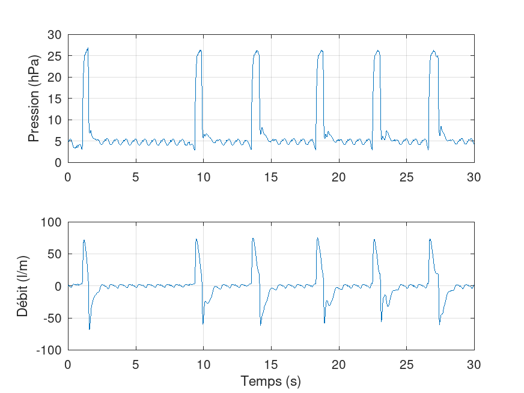
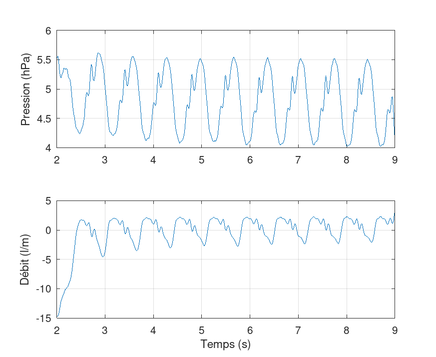
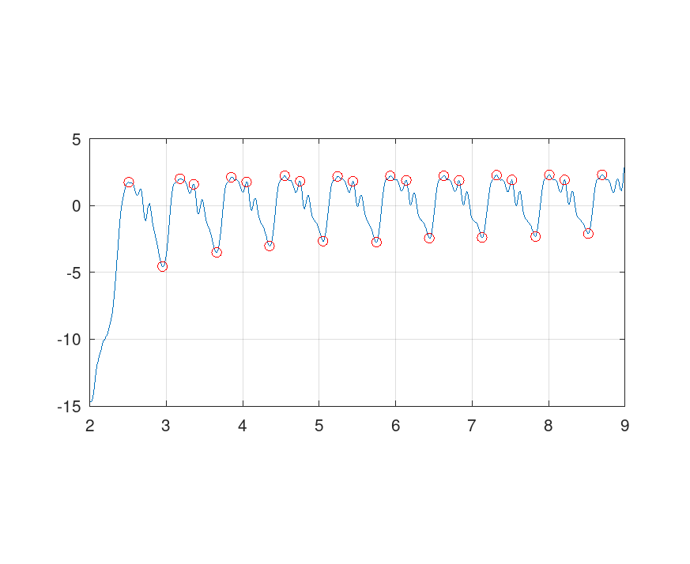
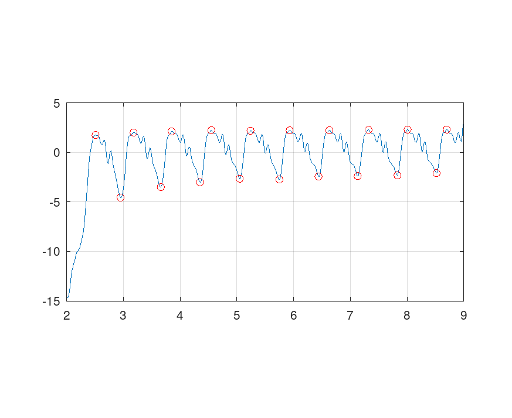

#!/usr/bin/octave pkg load signal function pftplot(p, f, t) fig = figure(); subplot(211); plot(t, p); ylabel("Pression (hPa)"); subplot(212); plot(t, f); ylabel("Débit (l/m)"); xlabel("Temps (s)"); endfunction set(groot,'defaultAxesXGrid','on') set(groot,'defaultAxesYGrid','on') s = parsesu("../data/1648128876436.txt"); pftplot(s.data.pression, s.data.debit, s.data.temps);
ind = s.data.temps > 2 & s.data.temps < 9; temps = s.data.temps(ind); debit = s.data.debit(ind); pression = s.data.pression(ind); pftplot(pression, debit, temps);
Première passe
[peaks, loc] = findpeaks(debit, "MinPeakDistance", 18, "MinPeakWidth", 50, "DoubleSided"); f = figure(); plot (temps, debit, temps(loc), peaks, "or") pbaspect(gca(), [2 1 1])
Deuxième passe
filtered = abs([2;diff(peaks)])>1;
pf = peaks(filtered);
lf = loc(filtered);
f=figure();
plot(temps, debit, temps(lf), pf, "or")
pbaspect([2 1 1])
ttop = temps(lf(pf>0)); periods = diff(ttop); freqs = 60./periods; printf("%.3fs\n", ttop) printf("\n"); printf("%.3fs | %.0f /min\n", [periods'; freqs']) mean(periods) mean(freqs)
2.510s 3.180s 3.850s 4.550s 5.240s 5.930s 6.630s 7.320s 8.010s 8.700s 0.670s | 90 /min 0.670s | 90 /min 0.700s | 86 /min 0.690s | 87 /min 0.690s | 87 /min 0.700s | 86 /min 0.690s | 87 /min 0.690s | 87 /min 0.690s | 87 /min ans = 0.6878 ans = 87.257